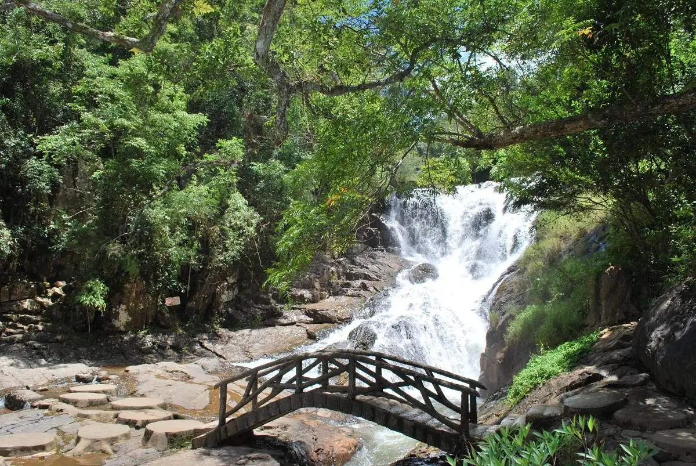
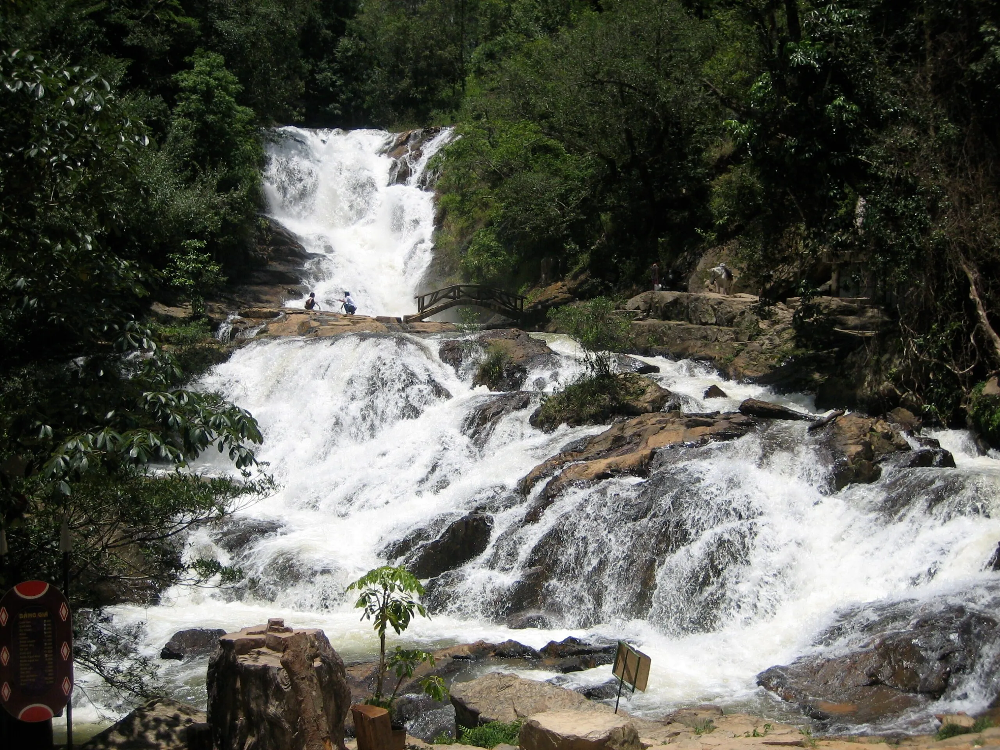
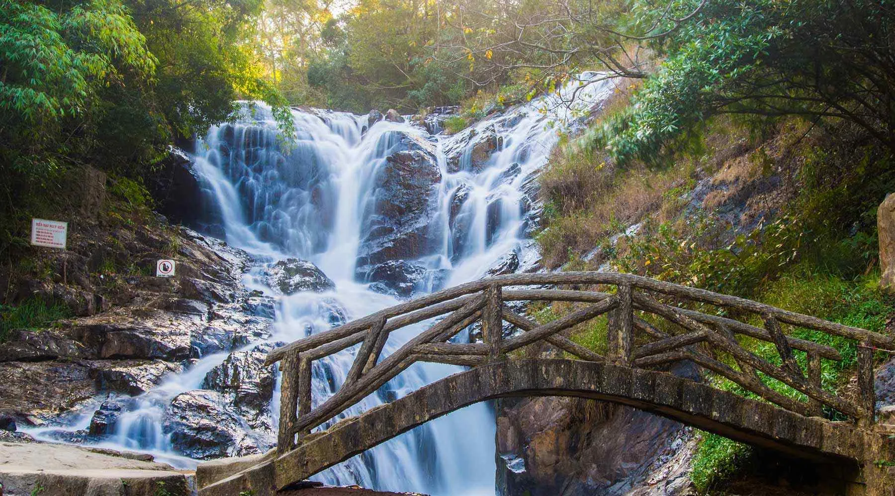
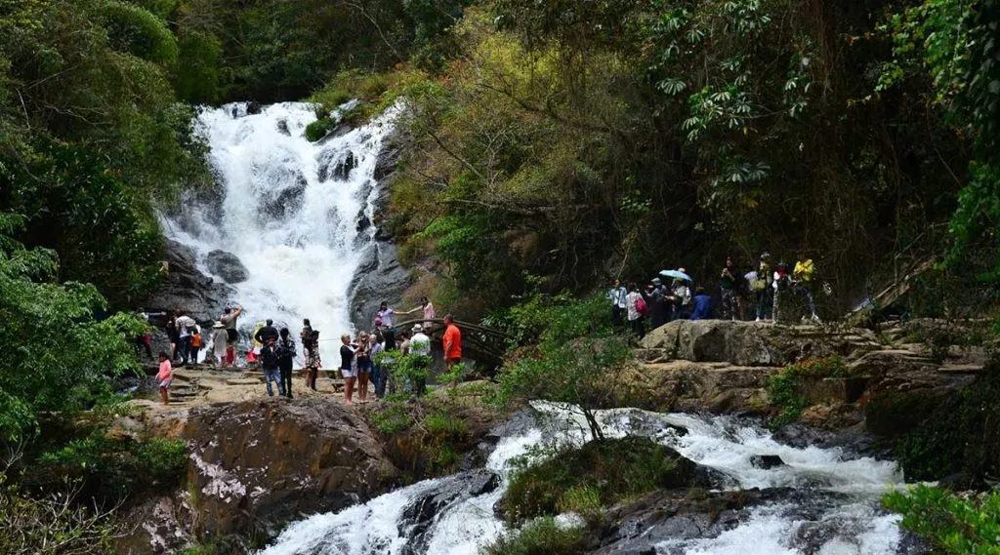
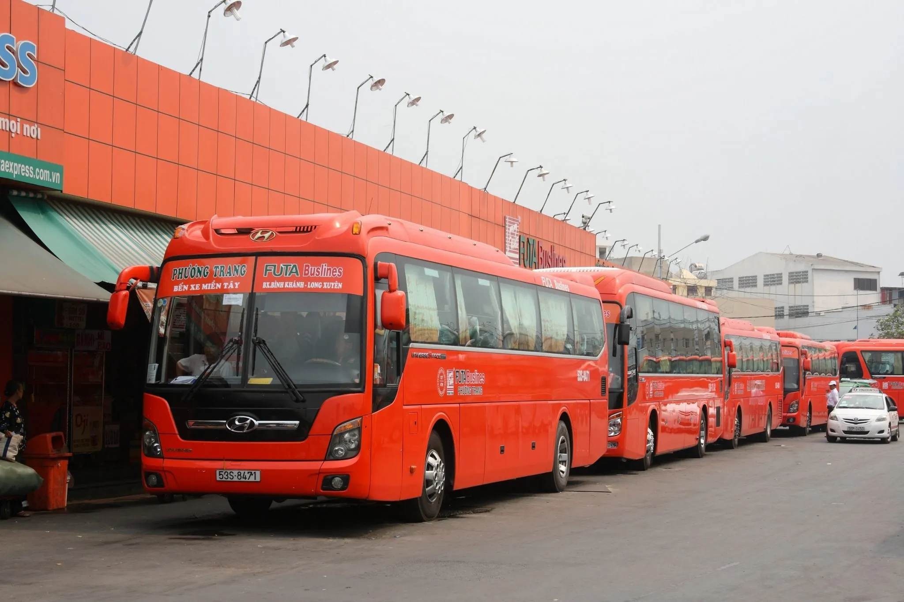
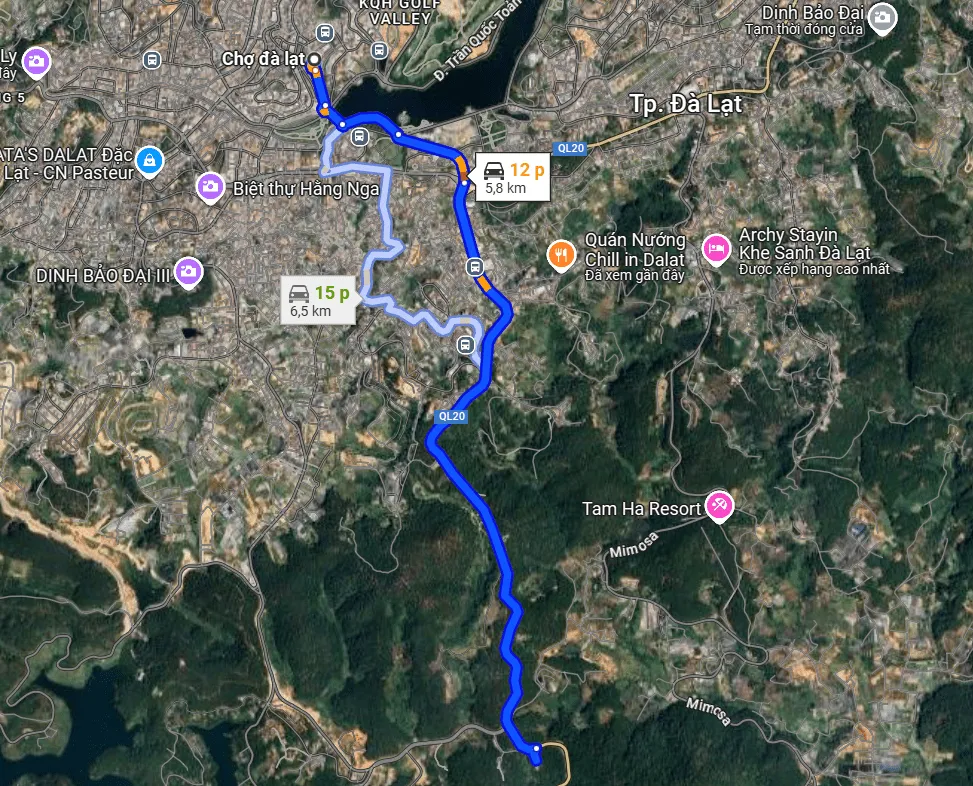
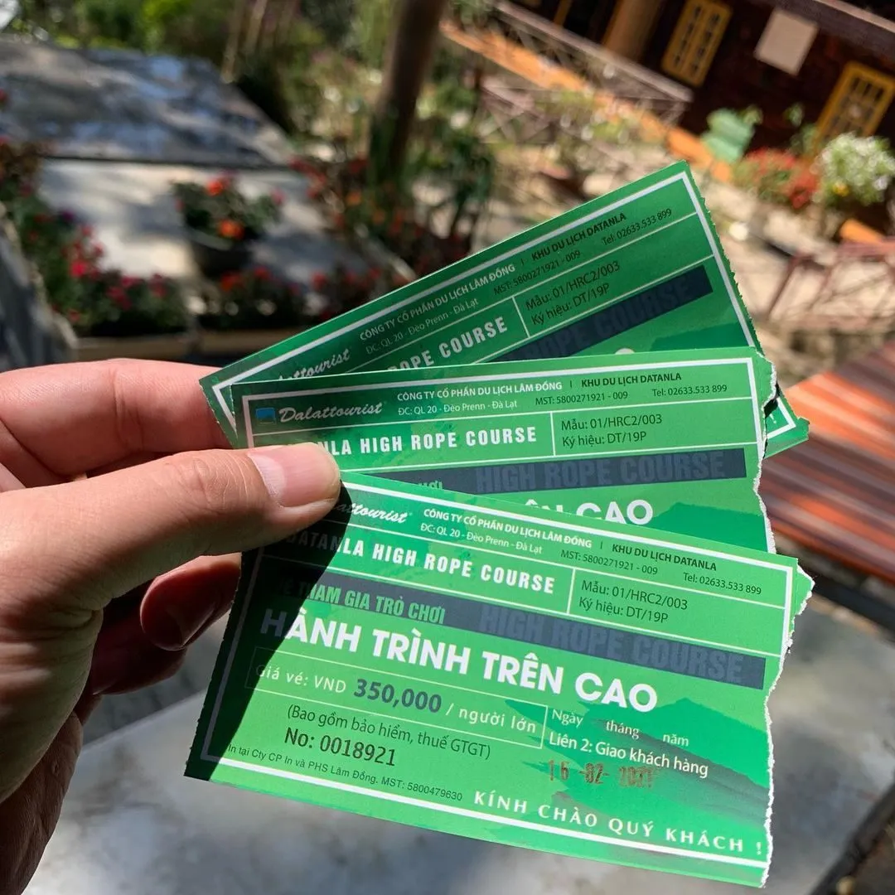
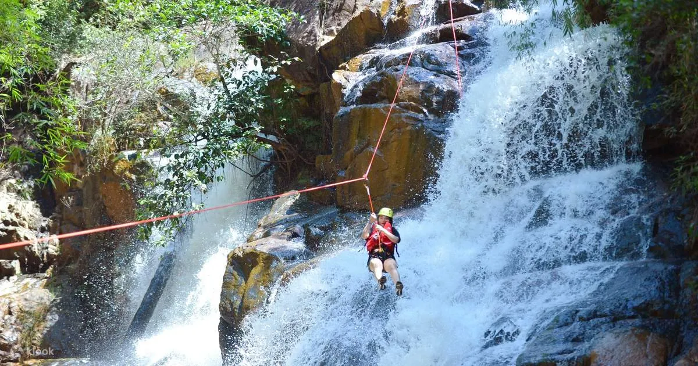

Explore Datanla Waterfall in Da Lat: An ideal adventure paradise

Table of Contents
- 1. Introduction to Datanla waterfall
- 2. Vị trí của thác Datanla
- 3. The right time to visit Datanla waterfall
- 4. How to get to Datanla waterfall
- 5. Giá vé tham quan và dịch vụ tại khu du lịch thác Datanla
-
6. Attractive activities not to be missed at Datanla waterfall tourist area
- 6.1. Zipline over Datanla waterfall – Dramatic canyoning experience
- 6.2. Adventurous rope swing in the middle of the forest - Challenge your endurance and teamwork at Datanla waterfall
- 6.3. Slide through the forest - "Fly" among the wild nature at Datanla waterfall
- 6.4. Join your teammates for dramatic whitewater rafting at Datanla waterfall
- 6.5. Take the cable car - Enjoy the panoramic view of nature from above Datanla waterfall
- 6.6. Stroll through the forest - A gentle but poetic journey at Datanla waterfall
- 7. Cuisine when coming to Datanla waterfall - What to eat for the right taste?
- 8. Suggested places to stay near Datanla waterfall - Where to stay for convenience and chill?
- 9. What's there to do in Da Lat? Suggested "must try" activities when visiting the foggy city near Datanla waterfall
- 10. Things to remember when exploring Datanla waterfall
- 11. Recharge after exploring Datanla waterfall at Xom Leo Grill & Chill
Located in the middle of the majestic mountains and forests of the Central Highlands, *Datanla waterfall* is one of the prominent destinations of Da Lat, attracting tourists who love thrills and wish to challenge themselves through stimulating adventure games. This is an "entertainment paradise" amidst pristine nature, where you can "unwind" to the fullest in cool water and fresh air.
With a typical cold climate and poetic natural scenery, the Datanla waterfall area is also impressed by ancient architectural works with French imprints, contributing to the beauty of the intersection between nature and history, captivating countless tourists. Don't miss the opportunity to enjoy the magnificent beauty of the largest waterfall in Lam Dong and participate in a series of exciting adventure games.
1. Introduction to Datanla waterfall
Located in the heart of Lam Vien plateau, Datanla waterfall is a prominent destination of Da Lat, famous for its wild beauty blending with the fierce and powerful features of nature. The waterfall is about 20 meters high pouring down from the rapids, flowing through many layers creating cool clear water. Above is the gentle Fairy stream, while below is a challenging abyss known as the Abyss of Death - a place that evokes a lot of curiosity for tourists who love to explore.
The natural landscape combined with unique terrain makes this place not only a spectacular tourist destination but also developed into a diverse eco-tourism area. Visitors to Datanla waterfall can enjoy a relaxing space, admire nature, and at the same time try exciting entertainment, adventure and discovery activities.
2. Location of Datanla waterfall
Datanla Waterfall is located in the tourist area of the same name, located on Highway 20, passing through Prenn Pass - one of the famous passes of Da Lat. This place is located in Ward 3, Da Lat city, Lam Dong province. From the city center, it only takes visitors about 10km to get here, and this area is also only about 8km from Prenn Waterfall, very convenient for combining visits to many nearby tourist attractions.
3. The right time to visit Datanla waterfall
Da Lat has a cool, pleasant climate all year round - a rare feature that makes this place always a favorite destination. Thanks to the mild weather, you can go to Datanla waterfall at any time of the year without worrying about being too hot or too cold.
However, according to the experience of many tourists, the most ideal time to explore Datanla waterfall is during the dry season - from November to April of the following year. The weather at this time is usually dry, clear and sunny, very convenient for traveling, sightseeing as well as participating in outdoor games or adventure activities such as slides, climbing ropes over waterfalls,...
4. How to get to Datanla waterfall
4.1. How to get to Da Lat?

From big cities like Ho Chi Minh City or Hanoi, you can easily get to Da Lat by plane or bus. Among them, the plane is the preferred choice for many people thanks to its speed, convenience and safety. Currently, airlines such as Vietnam Airlines, Vietjet Air, Bamboo Airways,... all operate many flights to Da Lat at competitive prices, especially flights from Hanoi or Ho Chi Minh City.
After landing at Lien Khuong airport - about 30 km from Da Lat center - you can continue to travel to Datanla waterfall by taxi or shuttle service. The distance from the airport to the waterfall is about 25 km, the average travel time is about 30 minutes.
*Tips:*Follow the "Fare Notification" program on Traveloka to hunt for good air tickets and save money on your trip!
4.2. Move from Da Lat center to Datanla waterfall

From the city center, getting to Datanla waterfall is quite easy with many options such as motorbikes, self-driving cars or taxis. You can refer to the following itinerary:
-
Depart from Da Lat market, follow the direction of Ong Dao bridge
-
Cross the bridge, turn left at the roundabout onto Tran Quoc Toan street
-
Continue to the second roundabout, turn onto 30/4 street
-
Follow the signs to Prenn Pass, continue moving to about the middle of the pass
-
Datanla Waterfall is located on the right, in the tourist area of the same name
*Note:*Because the road passing through Prenn Pass has many curves and steep slopes, you should drive your vehicle carefully, especially in bad weather or rain, to avoid slipping and dangerous situations due to landslides.
5. Sightseeing ticket prices and services at Datanla waterfall tourist area
Datanla waterfall tourist area is open to visitors every day of the week, from 7:00 am to 5:00 pm. However, before arriving, you should contact the management or ticket office in advance to update the latest information on maintenance schedules or operations of games and services.
Below is a reference price list for some popular activities at the tourist area:
-
Entrance tickets to sightseeing:
• Adults: 30,000 VND
• Children: 10,000 VND
-
Alpine Coaster:
• One-way ticket: Adult 80,000 VND | Children 60,000 VND
• Round trip ticket: Adult 170,000 VND | Children 100,000 VND
-
High Rope Course:
• Adults: 350,000 VND
• Children: 200,000 VND
-
Conquer waterfalls by zip-lining (Canyoning):
• Applicable for adults and children: 1,650,000 VND
-
Scenic cable car:
• One-way ticket: Adult 80,000 VND | Children 60,000 VND
• Round trip ticket: Adult 100,000 VND | Children 70,000 VND
Note: The above prices are for reference only and may change depending on the resort's policies from time to time. You should check official information on the resort's website or hotline before departure.
6. Attractive activities not to be missed at Datanla waterfall tourist area
Not only outstanding with its magnificent natural scenery and white waterfalls in the middle of the mountains and forests, Datanla waterfall tourist area is also a favorite destination for young people who love to explore and adventure. Here, a series of challenging and entertaining outdoor activities have been thoroughly invested and regularly innovated to ensure safety and bring unique experiences to visitors.
Are you ready to take on new challenges at Datanla? Below is a series of exciting games waiting for you to explore!
6.1.Zipline over Datanla Waterfall – Dramatic canyoning experience

This is one of the "top" adventure games at Datanla. Players will conquer steep cliffs, climb in rushing water and then swing over waterfalls. This activity requires good physical strength and a courageous spirit, but in return is a sublime feeling when overcoming fear and winning over yourself.
Ziplining over the waterfall is designed with many levels suitable for both beginners and experienced people, ensuring everyone can try it.
6.2.Adventurous rope swing in the middle of the forest - Challenge your endurance and teamwork at Datanla waterfall

This activity is extremely suitable for groups of friends or families who want to strengthen bonds. Players will overcome a system of 6 rounds, with a total of more than 80 challenges suspended at heights from 1m (for children) to 20m (for adults).
This is a game that helps train physical strength, team coordination and improve the spirit of overcoming difficulties, very suitable for those who are looking for a conquering and connecting experience.
6.3.Jumping through the forest – “Flying” amidst wild nature at Datanla waterfall

The mountain slide at Datanla is one of the most modern and longest slide systems in Southeast Asia. You will be able to control your own sled, freely adjusting your speed as you glide through sharp turns, steep sections and winding through the shady pine forest.
The feeling of rushing through wild nature, the wind blowing in your ears and the exciting turns will definitely make you unforgettable.
6.4. Dramatic rafting with your teammates at Datanla waterfall

If you have ever experienced kayaking on the sea or river, the whitewater rafting journey by boat at Datanla will bring a completely different feeling. With a team of 2–6 people/boat, the whole group will together control the boat through 10 rapids over a period of several hours.
This activity requires good coordination, flexible situation handling skills and team spirit. Challenging yourself and creating opportunities for team bonding - this is definitely a "worth a try" experience if you love interesting and dynamic group activities.
6.5. Take the cable car - See the panorama of nature from above Datanla waterfall

For tourists who want to enjoy the beauty of Da Lat's mountains and forests in a gentle way, the cable car system at Datanla waterfall is the perfect choice. The more than 2km long cable car route will take you flying through vast pine forests, green valleys and rooftops hidden in the middle of nature.
From the cabin, you can capture the majestic and poetic beauty of Datanla waterfall in your sight - a relaxing and poetic experience, very suitable for families with the elderly or young children.
6.6. Stroll through the forest – A gentle yet poetic journey at Datanla waterfall

No need for endurance or professional trekking skills, you can still explore the pristine nature of the forest in Datanla through a walking journey of about 1km, with 200 gentle steps.
The cool path under the trees, the sound of birds singing, the gurgling stream and the smell of grass and trees will bring a feeling of relaxation, very suitable for relieving stress and regenerating energy. This is a pleasant activity, suitable for both children and adults who want to immerse themselves in nature in the most gentle way.
7. Cuisine when coming to Datanla waterfall - What to eat for the right taste?
The area around Datanla waterfall does not have too many restaurants serving food, however you can still dine at Datanla restaurant, located right near the entrance to the tourist area. The restaurant is designed in the style of a traditional stilt house with a rustic thatched roof imbued with highland culture, creating a cozy space close to nature.
Here, diners can enjoy many Central Highlands specialties at reasonable prices. A light meal amidst the mountain scenery will help you recharge after participating in fun activities.
After leaving the tourist area, don't miss the opportunity to explore Da Lat cuisine famous for its famous delicacies such as:
-
Grilled rice paper– “Vietnamese pizza” is crispy, fragrant,
-
Shumai bread– simple but rich in flavor,
-
Chicken intestine wet cake– a very popular signature dish.
Whether you choose to eat at the tourist area or explore more in the city, your culinary journey in Da Lat will definitely leave many unforgettable aftertaste.
8. Suggested places to stay near Datanla waterfall - Where to stay for convenience and chill?
To make your trip to explore Datanla waterfall more complete, choosing a suitable hotel near the tourist area is a must. Luckily, the area around the falls and Prenn Pass has a variety of accommodation options – from budget homestays to luxury hotels – making it easy to find the ideal place to stay.
Many hotels here are designed in harmony with nature, with beautiful views of pine forests or mountains, very suitable for resting after a long day of experiences. Below are a few quality hotel suggestions with attractive deals on online booking platforms:
-
Terracotta Hotel & Resort Da Lat– high-class resort near Tuyen Lam Lake, not far from Datanla waterfall, full amenities and extremely "chill" scenery.
-
Swiss-Belresort Tuyen Lam– luxurious European style, with swimming pool and golf course, suitable for a relaxing vacation.
-
Da Lat Wonder Resort– near Datanla tourist area, lake view room, good service, reasonable price.
-
Homestays like The Wilder-nest, Boho Homestay– rustic, close style, loved by young people.
#### 9. What to do in Da Lat? Suggested "must try" activities when visiting the foggy city near Datanla waterfall
Possessing a poetic and majestic beauty, Da Lat has long become a "tourist paradise" for all travel lovers. Thanks to its mild climate and diverse nature, this place is not only suitable for relaxation but also an ideal place to try many exciting outdoor activities.
If you are planning to explore Da Lat, here are some experiences not to miss:
-
Trekking - conquering nature: Roads through pine forests, over waterfalls, or across tea hills, pink grass hills... are attractive options for those who like to challenge themselves.
-
Hunting clouds at dawn: Go to the top of Da Phu, Cau Dat or Hon Bo hill early in the morning to capture the moment of mist covering the mountains and hills - an indispensable "valuable" experience in your Da Lat journey.
-
SUP rowing - relaxing in the middle of the lake: Experiencing the feeling of floating on Tuyen Lam lake in a peaceful setting, is a new activity but increasingly popular.
-
Visit farms & flower gardens: Visit strawberry gardens, hydrangea, lavender or sunflower gardens to freely take photos and enjoy the fresh air.
-
Explore famous amusement parks: Don't miss places like Que Garden, Kombi Land, Puppy Farm, ZooDoo... - each place has a unique and very "photogenic" concept.
10. Things to remember when exploring Datanla waterfall
To have a safe and complete trip at Datanla waterfall tourist area, you should note a few important things below:
-
Prepare yourself physically and mentally ready to experience: Many activities here require you to exercise and move a lot, so make sure you are healthy and bring the spirit of "play hard"!
-
Avoid going during the rainy season (May - August): This is the time when the weather is often wet, the roads are slippery, not favorable for adventure games and the slide system often stops operating to ensure safety.
-
Be careful when moving: The area around the waterfall has many steep sections, steps and deep water areas. Tourists, especially families with young children, should pay attention and move carefully.
-
Appropriate clothing: To easily participate in active games, girls should avoid wearing tight, entangled dresses or outfits.
-
Comply with safety instructions: When participating in games or activities in the tourist area, always listen and follow the instructions of the tour guide or person in charge to ensure the safety of yourself and those around you.
11. Recharge after exploring Datanla waterfall at Xom Leo Grill & Chill Shop
After a day of conquering Datanla waterfall with all kinds of adventure games and magnificent natural scenery, don't forget to reward yourself with a typical Da Lat meal at Xom Leo Grill & Chill Shop - an ideal stopover to "recharge your energy" amid the cold weather of the plateau.
🔥Chill atmosphere in the heart of a mountain town
Located at 113 Huynh Tan Phat, Ward 11, Xom Leo Grill & Chill Shop has a rustic, close look but still exudes the personality of Da Lat. The space is airy, cozy, extremely suitable for you to enjoy delicious food and relax after an energetic journey.
🥢Delicious menu - standard Da Lat grilled flavor
The restaurant has a diverse menu with fragrant grilled dishes, served with authentic rich dipping sauces. Whether you are a "strong eater" group or just want to try a few light dishes, you can easily choose dishes that suit your taste here. A great choice to end a long day with friends or relatives.
🧑🍳Friendly service – pleasant experience
The big plus point for the restaurant is its friendly and attentive staff. From reception to service, everything brings a pleasant, heartwarming feeling - true Da Lat.
📌Contact information:
-
Address: 113 Huynh Tan Phat, Ward 11, Da Lat
-
Hotline: 076.45.27.336 – 0899.42.8434 – 0902.91.2240
-
Reserve Table:*Here*
-
Google Map:*View on map*
📍Small note: If you want a nice seat with a chill corner overlooking a romantic view, come early - especially on evenings or weekends!
The journey to explore Datanla waterfall not only takes you to the majestic beauty of the mountains and forests and challenging adventure games, but is also an opportunity to enjoy fresh air and relax amidst Da Lat's nature. After a day of traveling, don't forget to stop by Xom Leo Grill & Chill Shop to recharge your energy with delicious grilled dishes in a "chill" atmosphere true to the mountain town - an ideal stop to end a trip full of memories in a complete and memorable way.